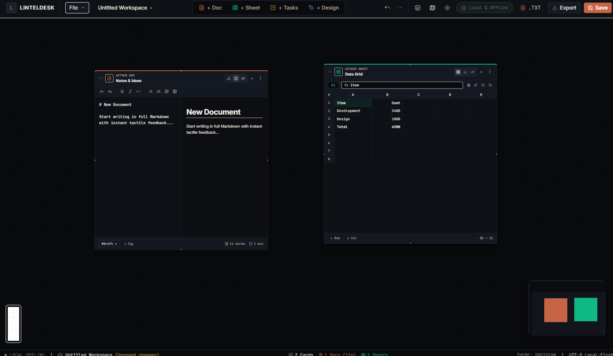

About LintelDesk.
LintelDesk is a new independently built Windows application created around a simple idea: useful productivity software should be fast, straightforward, and able to work with your files directly on your own computer.

Why LintelDesk exists
LintelDesk started as an independent software project, not as a large company or a corporate product.
Built independently
LintelDesk is developed independently. There is no large organization behind the product and no claim of being a major software company.
Your computer comes first
The project is designed around local Windows software and local files, rather than making a cloud account the center of the experience.
Simple pricing
LintelDesk is offered as a one-time purchase instead of a recurring monthly subscription for the product described on this site.
The problem LintelDesk tries to solve
Most modern productivity tools are built cloud-first: a document editor, a spreadsheet, a task board, and a diagramming tool, each as a separate subscription, each requiring an internet connection, each storing your data on someone else's server.
LintelDesk combines four of those functions — Docs, Sheets, Tasks, and Canvas — into a single native Windows program that runs on your machine, keeps files in open formats on your own hard drive, and is licensed with a single payment rather than a monthly fee. It will not fit every workflow — teams that need real-time multi-user collaboration or mobile access are better served by a cloud suite. It's built for people who work primarily on one Windows PC and want their files to stay there.
How LintelDesk handles your data
Concrete detail on where files go and what the application does and does not do.
Local files only
Workspaces are saved to your hard drive in the .linteldesk workspace
format, alongside open formats such as .md, .csv,
.json, and .png for individual documents and exports.
No account required to use it
LintelDesk does not require creating an online account or signing in to open and edit your files. An internet connection is only used at the point of purchase and download, not during day-to-day use.
No usage tracking
The application does not send usage analytics or document content to any server while you work. Full details are in the Privacy Policy.
You are responsible for backups
Because files live only on your machine, LintelDesk does not provide cloud backup. We recommend including your workspace folder in whatever backup routine (external drive, personal cloud folder, etc.) you already use.
Who is behind it?
LintelDesk is built and maintained by an independent developer.
The Developer
What LintelDesk is not
A clear description is more useful than pretending to be something it isn't.
Not a large software company
LintelDesk is not presented as a large corporation, enterprise vendor, or team of hundreds of people. It is an independently developed product.
No fake customers or endorsements
LintelDesk does not use made-up customer counts, fake testimonials, or invented partnerships to make the project appear larger than it is.
No real-time collaboration
LintelDesk is single-user, single-machine software. It does not offer live multi-person editing the way a cloud-based office suite does.
Windows only, for now
The application currently supports Windows 10 and 11 (64-bit) only. There is no macOS, Linux, or mobile version at this time.
Who LintelDesk is built for
Writers & note-takers
People who want a fast, distraction-free Markdown editor with an outline view, without a browser tab or a subscription attached to it.
Freelancers & solo operators
People tracking tasks, simple budgets, and project diagrams for their own work, on their own machine, without paying for a team-sized SaaS plan.
Privacy-conscious users
People who would rather their documents never touch a third-party server, by design rather than by a settings toggle.
System requirements
- Windows 10 or Windows 11, 64-bit
- Approximately 83 MB of free disk space for the installer
- A GPU with DirectX 12 support, for hardware-accelerated Canvas rendering
- No internet connection required after installation
Purchasing, licensing, and refunds
Payment processing
Checkout is handled through Shoppex.io, with card payments processed by Stripe. Credit/debit card is the standard payment method; select cryptocurrencies are available as an optional alternative at checkout. LintelDesk does not directly handle or store your card details.
Personal license
A single license activates on up to three personal Windows computers belonging to the purchaser, covering common cases like a desktop and a laptop.
What "lifetime" covers
Your license includes free updates within the v1.x release line. Refer to the Terms of Service for the full definition of update eligibility and any future major-version policy.
Refund requests
For refund eligibility and the process to request one, see the Terms of Service, or contact support directly with your order details.
Frequently asked questions
Straight answers about the software, the developer, and how it's sold.
Is LintelDesk a real, working product?
Yes. LintelDesk is a functioning Windows desktop application (v1.0.0) that you download and install after purchase. It is not vaporware or a pre-order for something that doesn't exist yet.
Why doesn't the site list a company name or team?
LintelDesk is built by an independent developer rather than a registered company with a public team page. That's disclosed here rather than hidden, and support is handled directly through the contact email listed on this site.
Is my payment information safe?
Checkout runs through Shoppex.io, with card payments processed by Stripe. Cryptocurrency is offered as an optional alternative for those who prefer it. LintelDesk never sees or stores your full card number.
What happens to my files if I stop using LintelDesk?
Your files remain on your hard drive in open formats (Markdown, CSV, JSON, PNG) that you can open with other software. Uninstalling LintelDesk does not delete or lock your existing documents.
Does LintelDesk work without internet access?
Yes. Once installed, the application runs fully offline. An internet connection is only needed to purchase and download it.
Can I try LintelDesk before buying?
Check the Download section for current availability of a trial or demo build.
How do I get support if something breaks?
Email the address in the Contact section below with your order details and a description of the issue. Support is provided directly by the developer.
Questions or support?
If you have a question about LintelDesk, your purchase, or the software, you can contact the project directly.
For product questions, purchase help, technical issues, or other LintelDesk-related questions.
Contact LintelDesk